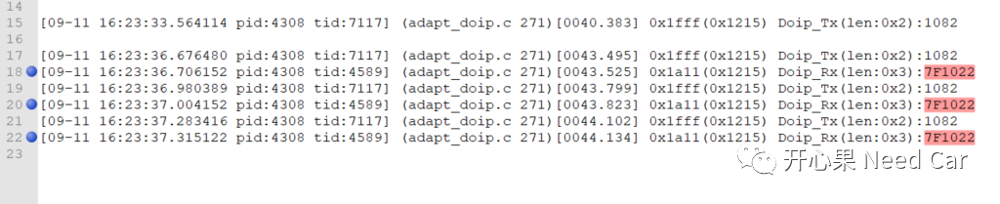
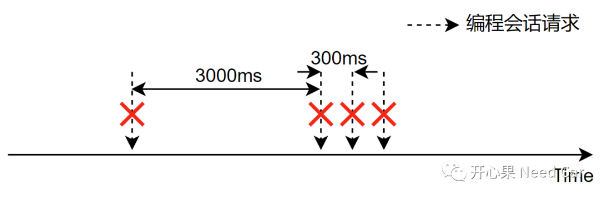
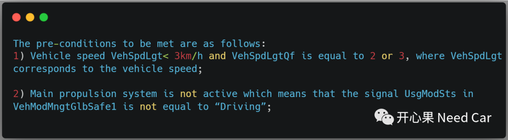
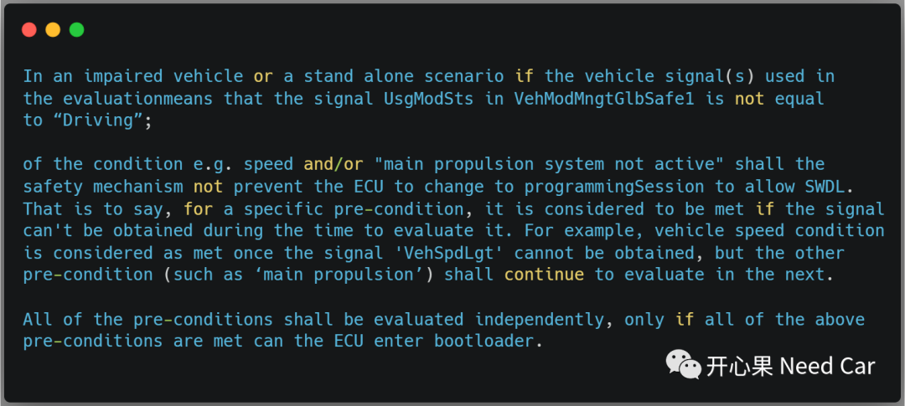
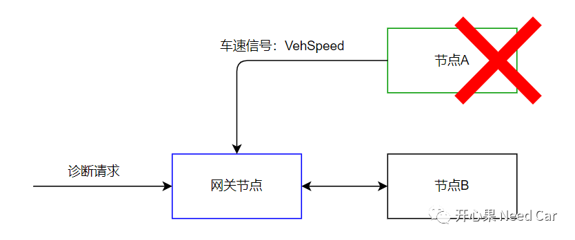
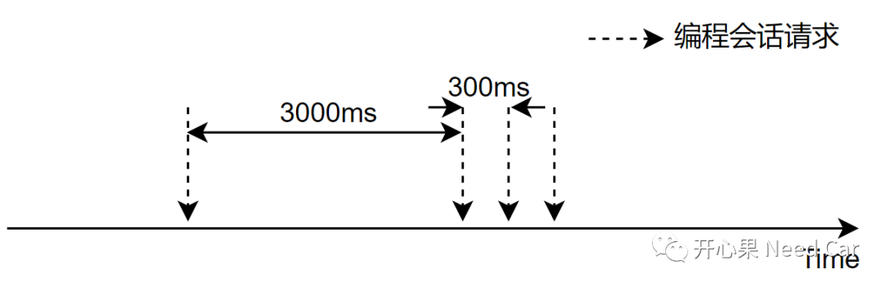
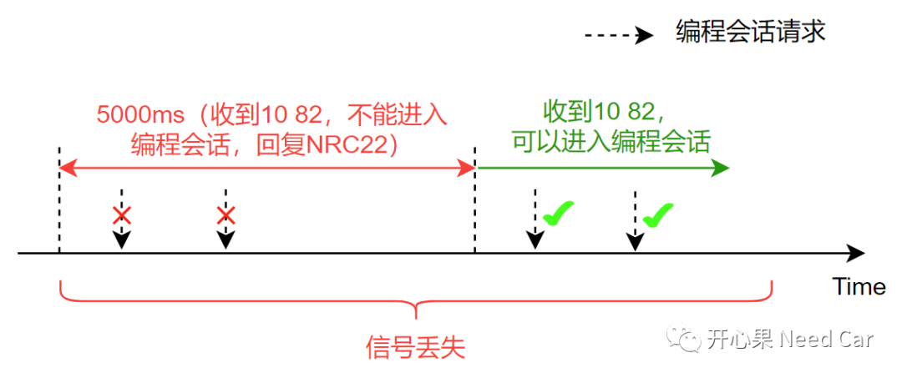
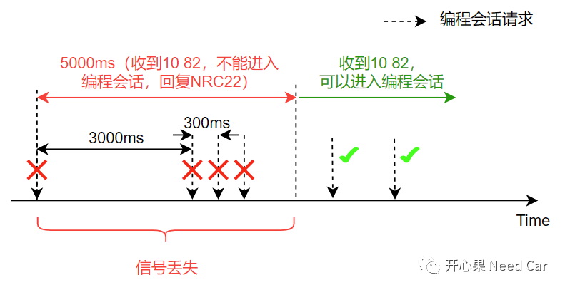
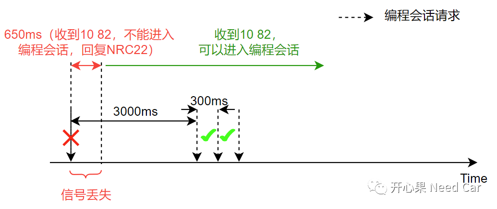
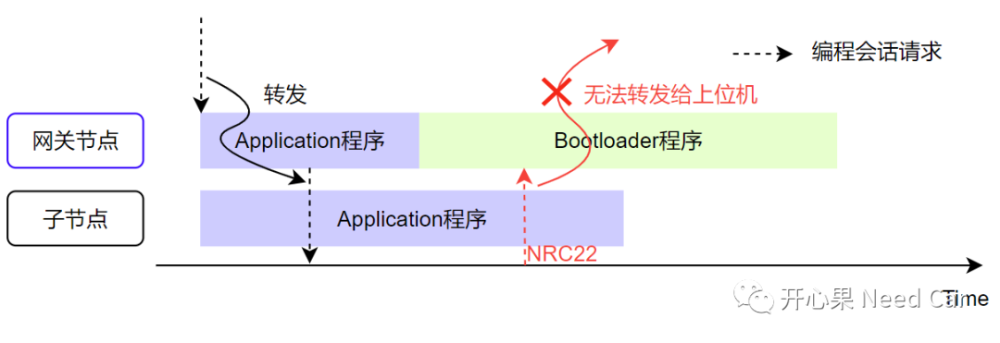

开心果 Need Car · 2023-10-04T11:37:00+08:00 · 微信原文
目前，OTA（Over the Air）技术在车辆软件升级中，使用地越来越普及，似乎成了各家OEM修复软件bug的"利器"。如果OEM想把OTA技术玩的得心应手，打和好供应商、后端必不可少。通俗讲：OEM把对各个控制器的需求落实清楚，供应商按照真实需求意图实现功能。然而，实现此目标依然艰难，OTA技术涉及跨部门合作，各个部门在实现技术细节时，又存在一定壁垒，进而导致各个部门都按照各自预期实现，缺少Connector去处理部门边界问题。本文，分享一个案例，聚焦一个工程实际问题：进入编程会话条件不满足，具体说：信号丢失（eg：车速信号丢失），还能否OTA？
1、问题背景




什么样的场景会出现需求二对应的工况呢？假设节点B所需要的车速信号（VehSpeed）由节点A发送，如果节点A故障，意味着节点B收不到车速信号。如果此时又需要更新节点B，会因收不到VehSpeed信号而不更新节点B吗？显然不能，所以，这就是需求二提出的意义，示意如下：

2、根因分析
在背景描述中，我们可以捕获如下信息：
（一）OTA失败后的请求策略
OTA在第一次进行编程会话请求失败后，延时3000ms，之后再次请求进入编程会话，如果第二次请求失败，再以300ms间隔请求，最多请求3次，示意如下：

（二）节点获取不到有效信号的延时时间未明确
在需求二中，要求：如果需求一不满足条件，判断第二个需求，但是，需求二中并没有约束信号丢失多少时间可以再次进入编程会话。
所以，供应商在实现需求二的时候，可能就存在盲区，此时，供应商可能按照经验设计第二条需求，eg：5s延时。即：如果节点在5s时间内没有收到有效信号，即使收到进入编程会话请求，也会回复NRC22，因为延时的5s时间没到；当信号丢失≥5s，且收到进入编程会话请求后，则认为满足需求二，可以进入编程会话，需求二示意如下：


3、解决措施

补充思考：
为什么第一次进入编程会话请求没有NRC22响应呢？本文的节点属于子节点，诊断命令由对应的网关节点状态，对应关系如下所示：
既然转发，且转发的命令是进入编程会话（进入Bootloader程序），就可能存在这样一种异常场景：当子节点收到网关节点的10 82请求以后，由于子节点处理异常，导致回复NRC22回复较慢，此时，网关节点自身先先进入了Bootloader程序，导致网关节点无法转发子节点的NRC22。

提示：如上的场景，只是一种假设。
往期精彩回顾
MCMCAN：CAN hardware object配置规则